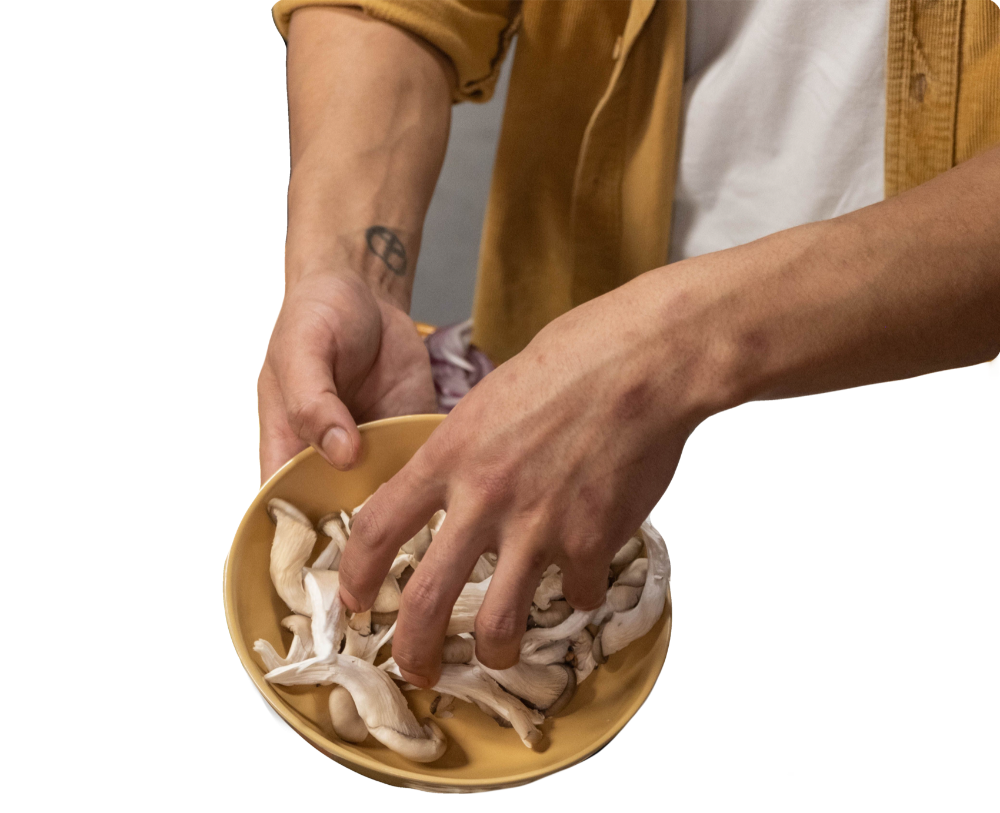
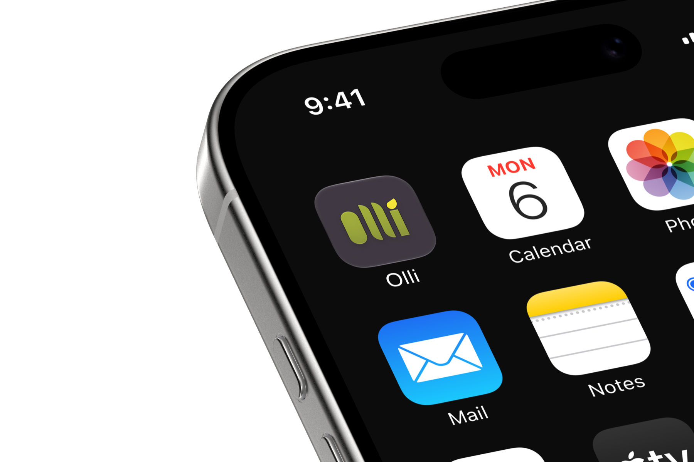
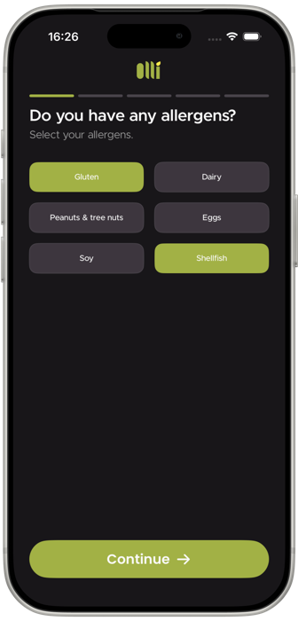
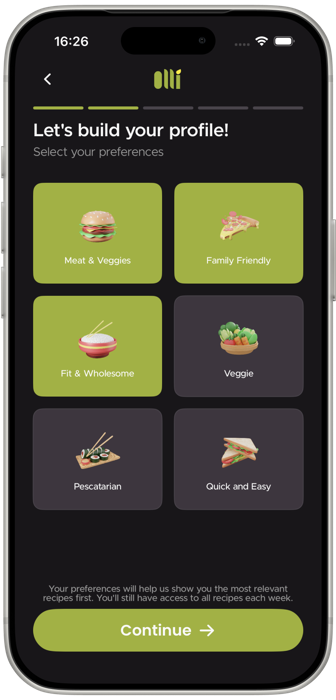
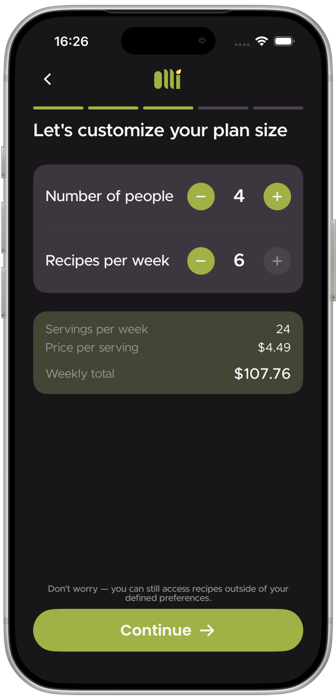
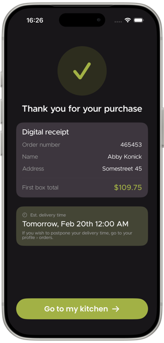
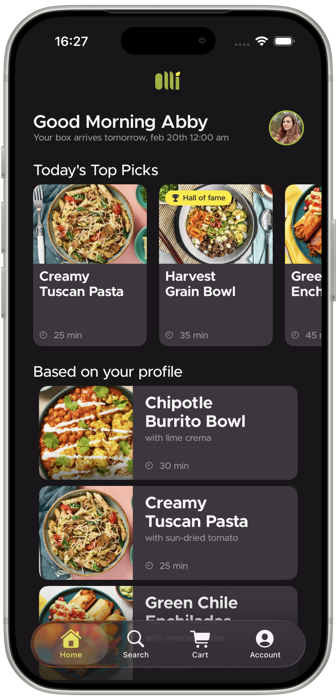
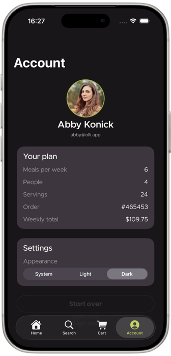

Olli is a meal subscription service built around the idea that cooking should feel like a choice, not a chore. Users browse a curated selection of recipes, pick what they want to make that week, and the exact ingredients arrive at their door — nothing more, nothing wasted.
The app goes beyond delivery. Each recipe comes with a step-by-step cooking tutorial built directly into the interface — timed, visual, and designed to guide you through the process without ever leaving the app.
The design challenge was building something that felt warm and approachable without losing the clean confidence of a premium product. The result is an interface that respects your time and makes the kitchen feel less intimidating.


Onboarding builds a profile that actually matters. Pick your allergens and how you like to eat — Meat & Veggies, Fit & Wholesome, Veggie, Pescatarian — and every week is filtered to match. The whole thing takes under two minutes.


Set how many people you cook for and how many recipes you want — servings, price per serving and the weekly total all update as you go. No surprises at checkout, and the receipt says exactly when the box lands.


The home feed greets you by name and shows when the box lands. Your plan, orders and appearance settings all live on one screen — nothing buried, nothing to hunt for.